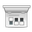

Remmina
Dieser Artikel wurde für die folgenden Ubuntu-Versionen getestet:
Ubuntu 17.10 Artful Aardvark
Ubuntu 16.04 Xenial Xerus
Ubuntu 14.04 Trusty Tahr
Zum Verständnis dieses Artikels sind folgende Seiten hilfreich:
Remmina  ist eine Fernwartungssoftware, die die Protokolle VNC, NX, RDP, XDMCP sowie SFTP unterstützt. Es ist möglich, eine Verbindung durch einen SSH-Tunnel zu leiten, was besonders sinnvoll ist, wenn man normalerweise unverschlüsselte Protokolle wie VNC über das Internet einsetzen möchte. Außerdem können VNC-Verbindungen umgekehrt ("reverse") aufgebaut werden, wenn etwa der Server hinter einem NAT-Router sitzt. Weiterhin wird Avahi unterstützt, um im lokalem Netzwerk nach Servern zu suchen. Durch die Integration von Telepathy kann zudem eine Verbindung über einen Instant-Messenger wie Empathy aufgebaut werden.
ist eine Fernwartungssoftware, die die Protokolle VNC, NX, RDP, XDMCP sowie SFTP unterstützt. Es ist möglich, eine Verbindung durch einen SSH-Tunnel zu leiten, was besonders sinnvoll ist, wenn man normalerweise unverschlüsselte Protokolle wie VNC über das Internet einsetzen möchte. Außerdem können VNC-Verbindungen umgekehrt ("reverse") aufgebaut werden, wenn etwa der Server hinter einem NAT-Router sitzt. Weiterhin wird Avahi unterstützt, um im lokalem Netzwerk nach Servern zu suchen. Durch die Integration von Telepathy kann zudem eine Verbindung über einen Instant-Messenger wie Empathy aufgebaut werden.
Mit Version 1.x (Ubuntu 12.04 oder neuer) haben sich die Entwickler dem Projekt FreeRDP angeschlossen, um noch bessere Unterstützung für RDP zu bieten. Remmina ist auch eine gute Alternative zum älteren Terminal Server Client, der nur bis Ubuntu 11.04 unter dem Namen tsclient in den Paketquellen enthalten gewesen ist. Durch die Verwendung der Grafikbibliothek GTK+ eignet es sich besonders für GNOME, Xfce und LXDE.
Wer sich ausschließlich via RDP mit Windows-Rechnern verbinden möchte, kann das auch mit rdesktop erledigen.
Installation¶
Verwendung der offiziellen Paketquellen¶
remmina (universe)
 mit apturl
mit apturl
Paketliste zum Kopieren:
sudo apt-get install remmina
sudo aptitude install remmina
Die Funktionalität der einzelnen Protokolle ist in Plugins ausgelagert worden, die bei Bedarf separat installiert werden können, einige sind bei der normalen Installation schon enthalten:
remmina-plugin-nx (universe)
remmina-plugin-rdp (universe)
remmina-plugin-telepathy (universe)
remmina-plugin-vnc (universe)
remmina-plugin-xdmcp (universe)
remmina-plugin-gnome (universe)
mit apturl
Paketliste zum Kopieren:
sudo apt-get install remmina-plugin-nx remmina-plugin-rdp remmina-plugin-telepathy remmina-plugin-vnc remmina-plugin-xdmcp remmina-plugin-gnome
sudo aptitude install remmina-plugin-nx remmina-plugin-rdp remmina-plugin-telepathy remmina-plugin-vnc remmina-plugin-xdmcp remmina-plugin-gnome
Eine laufende Instanz von Remmina muss nach der Installation der Erweiterungen neu gestartet werden, damit diese unter dem Menüpunkt "Werkzeuge -> Erweiterungen" verfügbar sind.
Aus einem PPA¶
Da in den offiziellen Quellen oft ein recht veralteter Stand enthalten ist, kann Remmina auch aus einem PPA der Entwicker installiert werden
Adresszeile zum Hinzufügen des PPAs:
ppa:ppa:remmina-ppa-team/remmina-next
Hinweis!
Zusätzliche Fremdquellen können das System gefährden.
Ein PPA unterstützt nicht zwangsläufig alle Ubuntu-Versionen. Weitere Informationen sind der  PPA-Beschreibung des Eigentümers/Teams remmina-ppa-team: zu entnehmen.
PPA-Beschreibung des Eigentümers/Teams remmina-ppa-team: zu entnehmen.
Damit Pakete aus dem PPA genutzt werden können, müssen die Paketquellen neu eingelesen werden.
Die Installation erfolgt wie oben beschrieben.
Benutzung¶
Nach der Installation kann das Programm über "Anwendungen -> Internet -> Remmina Betrachter für entfernte Arbeitsflächen" gestartet werden.
Mit einem Klick auf "Bearbeiten -> Neu" kann eine neue Verbindung erstellt werden. Hier müssen das Protokoll ausgewählt und die korrekten Daten für die Gegenstelle eingegeben werden. Wird SSH zum Verschlüsseln verwendet, so muss unter "Grundlegend" localhost als Server angegeben werden, da man sich dank SSH bereits auf der entfernten Maschine befindet. Nach einem Klick auf "Verbinden" sollte die Arbeitsfläche des entfernten Rechners erscheinen.
Ist die Verbindung zustande gekommen, lassen sich außerdem Chat-Nachrichten und Dateien mit der Gegenstelle austauschen (wenn vom Server unterstützt).
| Remmina - Hauptfenster | |
| Symbol | Beschreibung |
 | Schnellverbindung herstellen |
| Verbindung zum ausgewählten Rechner herstellen | |
| Eine neue entfernte Arbeitsfläche erstellen | |
| Eine Kopie der ausgewählten entfernten Arbeitsfläche herstellen | |
 | Gewählte entfernte Arbeitsfläche bearbeiten |
 | Gewählte entfernte Arbeitsfläche löschen |
|  | Einstellungen bearbeiten |
Problembehebung¶
Verbindung fehlgeschlagen¶
Es kann passieren, dass es plötzlich nicht mehr möglich ist, sich mit einem Server zu verbinden, zu dem vorher eine Verbindung möglich gewesen ist. Es erscheint dann immer die Fehlermeldung "Verbindung zum RDP Server fehlgeschlagen". In diesem Fall kann es helfen, den Zwischenspeicher zu löschen:
rm ~/.freerdp/known_hosts
SSH Verbindung über PublicKey schlägt fehl¶
Sollte die Anmeldung über PublicKey zwar auf der Kommandozeile funktionieren, in Remmina aber mit der Meldung "wrong state during pending ssh call" abbrechen, können folgende Einträge in der Konfigurationsdatei /etc/ssh/sshd_config helfen:
GSSAPIAuthentication no UseDNS no
Links¶
Remmina Wiki
- DokumentationFAQ
- häufig gestellte Fragen und Antworten
Connect To Windows 8 From Ubuntu Via Remote Desktop
- Blogbeitrag, 01/2013Remmina - Remote desktop client
- Blogbeitrag, 03/2010
- Erstellt mit Inyoka
-
 2004 – 2017 ubuntuusers.de • Einige Rechte vorbehalten
2004 – 2017 ubuntuusers.de • Einige Rechte vorbehalten
Lizenz • Kontakt • Datenschutz • Impressum • Serverstatus -
Serverhousing gespendet von